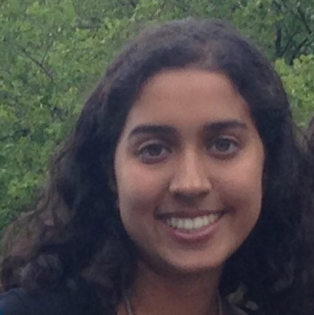

|
Copyright 2017 - College Democrats at University of Michigan
Feminist Democrats
|  | |
|---|---|
| Hannah Katz | Safia Sayed |
| Chair | Chair |
Who Are We?
Femdems is the women’s issue committee of the college democrats at the university of Michigan. We strive to practice intersectional and inclusive feminism to take on the issues of gender equality, women’s health care, reproductive justice, and equal pay, among other things that impact women in this country. In the past, we have hosted panels on women’s health, created pamphlets on pro-women legislation and elected officials, and educated members of College Democrats on comprehensive and inclusive sex education. Join us as we advocate for all women and smash the patriarchy in the company of an awesome group of progressive feminists. All identities welcome. We meet every Monday at 8 PM at the Red Couches on the 4th floor of the Michigan Union.
|
|
Copyright 2017 - College Democrats at University of Michigan